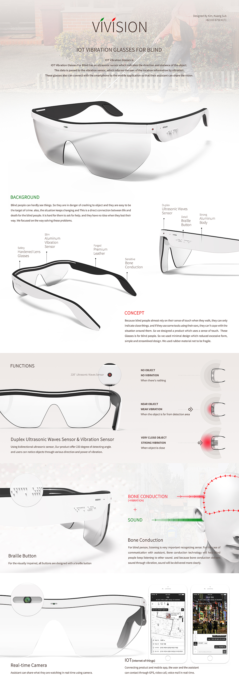

<div class="article">
	<div class="article_cover">
		<div class="article_cover_title">바이비전 배너</div>
		<div class="article_cover_info">
			<div class="article_cover_list article_cover_list_tags">
                <span class="article_cover_list-tag bold">참여도: 개인작업(졸업작품)</span>
                <span class="article_cover_list-tag cate">배너</span>
				<span class="article_cover_list-tag cate">인쇄물</span>
                <span class="article_cover_list-tag">포토샵</span>
				<span class="article_cover_list-tag">일러스트레이터</span>
				<span class="article_cover_list-tag">지브러쉬</span>
				<span class="article_cover_list-tag">알리아스</span>
				<span class="article_cover_list-tag">키샷</span>
            </div>
            <div class="article_cover_desc">
				시각장애인이 장애물을 진동으로 인지하도록 도와주는 제품에 대한 배너입니다. 3D 모델링 프로그램인 알리아스로 제품을 모델링하고, 제품에 들어갈 라벨은 일러스트레이터로 제작하여, 키샷으로 렌더링을 뽑았습니다. 3D 모델링 프로그램인 지브러쉬로 배너에 들어갈 얼굴 모형을 제작하였고, 최종적으로 산출된 작업물을 취합하여 포토샵으로 배너를 제작하였습니다.
            </div>
		</div>
	</div>
	<div class="article_body">
		<div class="article_img_box">
			
			<div class="article_img_cover"></div>
		</div>
	</div>
</div>